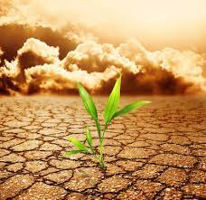
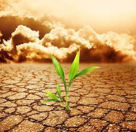

Soil pollution is defined as the presence of toxic chemicals (pollutants or contaminants) in soil, in high enough concentrations to pose a risk to human health and/or the ecosystem. In the case of contaminants which occur naturally in soil, even when their levels are not high enough to pose a risk, soil pollution is still said to occur if the levels of the contaminants in soil exceed the levels that should naturally be present.
Soil pollution affects plants, animals and humans alike. While anyone is susceptible to soil pollution, soil pollution effects may vary based on age, general health status and other factors, such as the type of pollutant or contaminant inhaled or ingested. However, children are usually more susceptible to exposure to contaminants, because they come in close contact with the soil by playing in the ground; combined with lower thresholds for disease, this triggers higher risks than for adults. Therefore, it is always important to test the soil before allowing your kids to play there, especially if you live in a highly industrialized area.